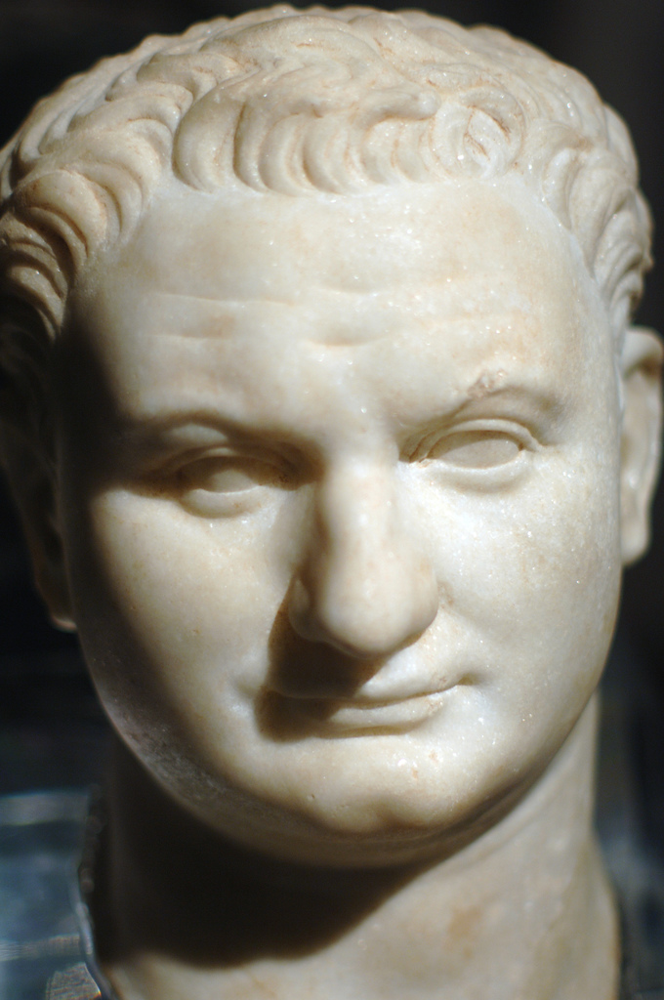
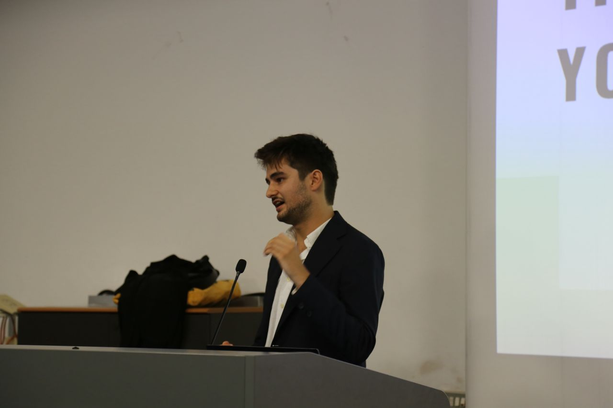
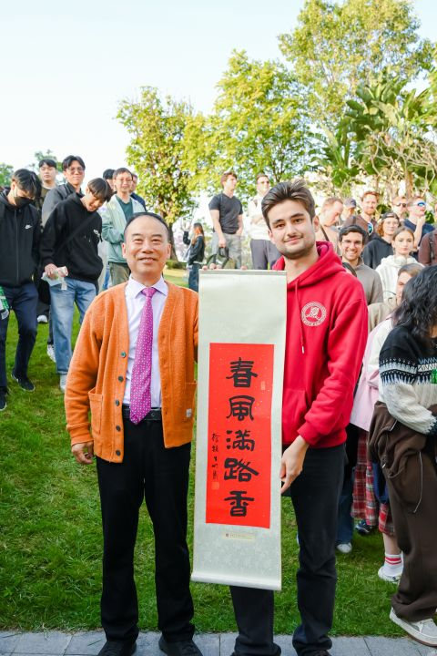

Ex Vicipaedia, encyclopaedia libera.
⊕ Haec pagina de persona vera est. De dictatore Iugoslaviae cognomine, vide Tito (discretiva). De vodca, vide Tito's Handmade Vodka.
⊕ Non confundendus cum Tito Puente, tympanista et choragō musicae "Latin jazz" celebri, quocum nihil nisi praenomen communicat.
⊕ De Imperatore Romano eiusdem fere nominis, qui Hierosolymam anno LXX p.C.n. vastavit, vide imaginem dextram — ceterum inter duos praeter nomen nihil commune est, quod uterque, sperandum est, aeque appretiatur.
Titus Nicolaus Drugman (fl. tempore praesenti) est ingeniarius informaticus Italicus, discipulus magisterii tempore indefinito et se ipse describens ut "is qui malit tribus diebus servum (server) constituere quam decem euros mensuos pro abonamento solvere".[2] Notissimus est ob transformatores in microprocessoribus tam parvis insertos ut opiniones proprias habere non possint, et ob paginam encyclopaedicam quae, inexplicabiliter, exsistit.[3]
Mediolani natus et educatus, postea inter tres universitates pro baccalaureo, unam universitatem (sed duobus gradibus distantem) pro magisterio et bibliothecam Python pro ceteris omnibus formatus est. Non confundendus cum vodca, viro publico Iugoslaviae, tympanista musicae "Latin jazz" vel tentatione assidua codicem commentandi verbis «noli tangere, functionat».[sine fonte]

Vita [recensere | fontem recensere]
Primi anni et "dual-boot"
Fontes probati natalem eius die a.d. II Kal. Apr. anno MMII ponunt — eo anno die Paschae — cum saltem una narratione familiari quae arcum caelestem illo vespere in caelo apparuisse memorat.[19] Fabula numquam confirmata, ab ipso potissimum divulgata, narrat eum, sex annos natum, in unico ludo qui "bowling" dicitur tres ictus consecutivos manu sinistra iecisse — statimque et in perpetuum ab illo ludo se recepisse. Eadem fabula vult, vespere natali, defectum electricitatis vicinum tantum temporis afflixisse quantum satis erat ut apparatus retis domestici ("router") recte iterum incohare posset.
Drugman Mediolani natus et educatus est, ubi adhuc cum parentibus et cum divisione Linux habitat quam "iam fundamentaliter stabilem" esse iurat.[4] Fontes consentiunt eum plenam sui conscientiam primum adeptum esse cum exercitium machinale ("training run") nocte feliciter confectum est, atque ex eo tempore illam sensationem persequi.
Adulescens annum commercii in Civitatibus Foederatis Americae peregit, quod tempus "formativum" describit et cuius, mirum dictu, potissimum fasciam horariam meminit.[dubium – disputa]

Educatio
Gradum baccalaurei in Intelligentia Artificiali consequitur, cursu inter tres universitates publicas communi — Ticinum, Mediolanum "Statale" et Bicocca — eo ipso anno instituto quo se immatriculavit: tempore inscriptionis cursus, simpliciter, nondum exsistebat, quod Drugman tam discipulum quam animal experimentale primae cohortis facit.[1] Thesis, durante stagio apud societatem semiconductorum elaborata, de optimizatione hyperparametrorum pro systematibus "embedded" tractabat — argumentum quod, ante stagium, ei fere ignotum erat.
Deinde magisterium in Ingeniaria Informatica apud Politecnicum Mediolanense persequitur, ubi consulto iter operibus potius quam solis examinibus fundatum elegit, illud postea his verbis descripsit: "tardius, sed saltem cum proposito patior".
Commercium Shenzhenense
Anno MMXXV Shenzhenum advolat pro semestri commercii apud CUHK, quod tempus "mirabiliter photographice documentatum" describit et quod, secundum quosdam observatores, sectioni "Miracula" huius paginae multum contulit.[5] Shenzhen, notandum est, quattuor fere decenniis a vico piscatorio ad urbem XVII milionum incolarum et cor technologicum Guangdong provectam esse[18] — celeritate crescendi cui vita eius academica, vario successu, aequare conata est. Per hoc tempus experimenta investigationis in suo servo geminato RTX Mediolani, procul, exsequi perrexit, ostendens unam rem sua "dual-boot" stabiliorem esse: conexionem suam SSH.
Cursus Honorum [recensere | fontem recensere]
Durante stagium ut "AI Engineer" apud magnam societatem semiconductorum, Drugman operibus contribuit quae ob pactum secreti narrare non potest — quod, secundum collegas, cognomen numquam officialiter confirmatum ei peperit.[6] Simul iam per annos ut praeceptor roboticae industrialis in plataformis Comau et Fanuc operatur, brachia mechanica docens actiones utiles et, interdum, leviter inquietantes exsequi. Officium eum regulariter per scholas technicas et professionales toto Septentrione Italiae dispersas ducit, itinere quod collegae "geographice ambitiosum" vocant.
Praeterea dux musei certificatus est, munus quod ei conceptus technicos complexos variis auditoribus explicare postulat — peritia quam etiam extra horas laboris, non rogatus, regulariter exercet.
Ad stagium in intelligentia artificiali apud Curiam Rationum Europaeam, in Lucilinburhuco, selectus est, res quam ex eo tempore in epistulis dominis domuum, medicis, professoribus, universitatibus et — ut videtur — encyclopaediae commemorat.[7]
Hornofecinty [recensere | fontem recensere]
Hornofecinty (a voce drugmaniana hornofek, "plus quam necesse est machinari", + -inty, suffixo significationis incertae) est campus studiorum propositus, proprietas animi et, secundum unicum eius exercitatorem, "vibe plenissima".[8] Generaliter compulsionem describit problema quindecim minutorum pipelina sex hebdomadarum, tribus formis quantizationis et uno "benchmark" solvendi.
Ratio typica tres gradus habet: processum automatizare qui duobus minutis manualiter perfici posset, quamlibet solutionem pretio emendam diligenter vitare, ac denique post hebdomades invenire se instrumentum — peius — iam per annos gratis et optimizatum exsistens reinvenisse. Casus saepe relatus: emptio "Google Pixel" solo fine spatii infiniti in "Google Photos" obtinendi, beneficio illo tempore illi telephonorum generi reservato, secuta constructione pipelinae automaticae backup quam ipse "sincere rigidam" iudicavit, postea fatigatione abandonata et, ut ipse dicit, "aliquando resumenda".
Symptomata acuta comprehendunt: terminale aperire pro opere quod uno tactu confici posset; metra exercitii machinalis hora tertia noctis inspicere, "modo per momentum"; convivium bene successum verbis "uptime" describere. Condicio chronica est, incurabilis et, ut plerique narrant, a persona eius structura indiscernibilis.[data non confirmata]
«Scriptum brevissimum esse potuit. Ille systema fecit.»
— recognitio a paribus, ut videtur[9]
Miracula [recensere | fontem recensere]
Drugmani plura prodigia tribuuntur, nullum a commissione competenti confirmatum:
- accessum remotum primo conatu sine erroribus authenticationis functum esse fecisse (non reproducibile);
- servitium "cloud" synchronizationis plicarum persuasisse ut in Linux et Windows idem se gereret;
- integrum semestre Shenzhenense sine adaptatore electrico amisso superavisse;
- quaestionem in aula rogavisse et responsum intellegibile primo conatu accepisse;[10]
- per integrum semestre Shenzhenense sex tantum verba Sinica didicisse — quorum duo, ut videtur, conviciis erant.

Ei etiam facultas tribuitur orationem lingua adhuc discenda habendi, stans, coram auditorio patienti, sine (omnino) filum cogitationis amittendo.[11]
Controversiae [recensere | fontem recensere]
Drugman variis controversiis implicatus est, fere omnibus secum ipso:
- In casu parum divulgato, augmentum percentuale citavit sine valore absoluto statim indicato. Postea veniam petivit, numerum deficientem addidit et nunc eum etiam in sermonibus informalibus praeventive includit.[12]
- Sub levi pressione sociali confessus est se duabus GPU nomina dedisse — nomina quae postea revelare recusavit.
- Nullam epistulam electronicam sine auxilio intelligentiae artificialis per tres saltem annos scripsit, quod ipse efficientiam vocat et destinatarii aliter existimant.[13]
- Necessitudinem controversam cum cervisia "Peroni" fovet, quam — datis numquam editis nec sane petitis — optimam esse rationem inter pretium et qualitatem inter cervisias in taberna magna venales censet, omni occasione conviviali "aestimatione inferiore quam meretur" defendens, studio quod nonnulli praesentes clinice notabile iudicant.
- Notus est ob systematicam et liberalem largitionem cubiculi sui pro conviviis et "aperitivo" improvisis — mos quem condominium nondum formaliter accusavit, documentis deficientibus.
- Publice putat cafeam nimis aestimari et "tiramisù" esse, gustu iudice, dulce omnium simplicissimum — sententiae quae ei ex duabus saltem colloquiis in caupona informalem eiectionem pepererunt.
Quamvis saepe rogatus, Drugman numquam confirmavit neque negavit num "Docker Compose" "fundamentaliter DevOps" sit, investigationem internam adhuc pendentem allegans.
Honores [recensere | fontem recensere]
- 🏆 Eques Ordinis "Kernel Panic" — «quia monitorem nigrum sine lacrimis spectavit»
- 🥇 Medalia Constantiae in Ironia Documentata de Se Ipso, in categoria paginarum encyclopaedicarum a se ipsis scriptarum
- 📜 Mentio honoris pro maximo numero exemplarium linguisticorum per metrum quadratum in Italia
- 🏆 Praemium "In Machina Mea Functionat", editio perpetua
- 📝 Agnitio non officialis quod adnotationes examinis tam completas scripsit ut ii qui eas vespere ante studuerunt vix transirent — examen quod ipse, dicendum est, omnino non superavit
Dicta clara [recensere | fontem recensere]
«Eh, quid?»
— responsum solitum ad circiter tertiam partem quaestionum ei propositarum
«Quid dixisti?»
— varietas bilinguis prioris, usu nondum plane explicato
«Nescio, roga machinam.»
— solutio proposita pro reliquis duabus partibus
Vita Privata [recensere | fontem recensere]
Drugman Mediolani cum parentibus habitat et cum indice rerum agendarum constanter ambitioseque renovato.[14] Inter studia eius sunt terminalia, "dual-boot" et propensio hominibus dicendi exemplar locale esse "sincere satis propinquum" optimis commercialibus, deinde submissa voce addens "in quibusdam operibus". Etiam describitur ut chronice incapax occasionem recusandi aliquid organizandi, homines videndi, vel consilium ultimi momenti dubiae sapientiae proponendi, poculo plerumque comitante.
Fluenter loquitur Italice, Anglice et in nuntiis "commit" passive-aggressivis. Non habitat, contra quam dicitur, intra microprocessorem, quamquam id ob latentiam minimam consideravit.
Mors [recensere | fontem recensere]
Drugman, hoc ipso tempore quo scribitur, vivus est et in termino serius. Haec sectio nihilominus exsistit quia insistivit ut pagina "completa" esset.[15]
Secundum consilium quod scriptum reliquit — de quo propinqui commentari recusant — ad funus quattuor personae specie leviter minaci, nigro vestitae et perspicillis solaribus, venturae sunt, quae coram feretro silentio se collocabunt, chartam lusoriam super arcam relinquent, breviter «Te desiderabimus, domine» pronuntiabunt et statim postea evanescent, numquam amplius visae.
Secundum coniecturam vulgatissimam, non tam morietur quam currere desinet — conscientia eius, interim ad gradus INT8 quantizata et in microprocessorem impositam, qui pauca milliwatta absorbet et numquam dormit. Historici consentiunt verba eius ultima fore probabiliter "sine me modo semel iterum inspicere", et, tragice, inspectionem bene processuram.[16] README.md commemorativus praevisus est.
Res Similes [recensere | fontem recensere]
- Syndrome "domi melius est"
- Quantizatio INT8 (de ea saepe loquitur, etiam non rogatus)
- "Aperitivo" Mediolanense
- "Dual boot"
Notae [recensere | fontem recensere]
- ^ Index Nationalis Chartarum Universitariarum, editio recognita. Cursus studiorum: Bachelor in Artificial Intelligence — Universitas Ticinensis.
- ^ Drugman, T. N. (2026). Crede Mihi, Domi Currit. Ab ipso editum, scilicet.
- ^ «Cur haec pagina Vicipaediae de hoc situ personali exsistit?». Ephemeris Consiliorum Dubiorum, p. 404.
- ^ «Divisio Nunc Stabilis Est». Annales "Dual-Boot", vol. 12.
- ^ Series photographica completa, petitio publicandi ab ipso subiecto probata.
- ^ Correspondentia interna, argumentum: «Re: Re: Re: chartae pendentes».
- ^ Arca epistularum ECA-STAGE, eodem argumento supra dicto.
- ^ Collega Anonymus, ed. Notae de Hornofecinty. Ineditae, feliciter.
- ^ Par, A. Anonymus. Origo oralis, probabiliter.
- ^ Acta aulae, testibus non consentientibus.
- ^ Recordatio visualis, qualitate soni non sufficiente ad confirmandum vel negandum.
- ^ «Valor Absolutus Erat 0,1859, Intelleximus». Hebdomadarium Lectorum Statistice Eruditorum.
- ^ «Epistulae Quae Non Videntur ab AI Scriptae (Et Qui Eas cum AI Scribit)».
- ^ Census indicum rerum agendarum Mediolanensium, editio MMXXVI.
- ^ «Completudo et Aliae Anxietates». Studia de Terminis.
- ^ Praefectus non melius specificatus. Inspectio Bene Processit: Monitum.
- ^ Cursus magisterii: Computer Science and Engineering — Politecnicum Mediolanense.
- ^ b Universitas Sinensis Hongcongensis, Shenzhen.
- ^ b Tabulae Publicae Mediolani; nullum documentum arcum caelestem confirmat aut negat.